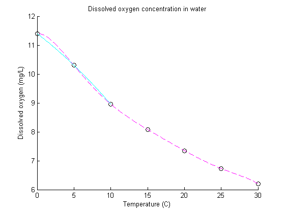
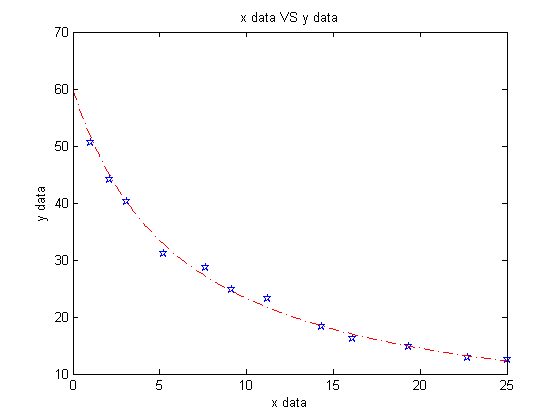

CS310 Fall 2015 Homework Assignment 2
- Name: Yizhe Qu
- Team Lab: 304
- Due Date: Thursday, October 15 by 4 pm
Contents
- Problem 1: Component Analysis
- Problem 1.a: Equations for the linear system
- Problem 1.b: Solve the linear system
- Problem 2: Heat Plate Linear System
- Problem 2.a: Define the heatPlate function
- Problem 2.b: Call the heatPlate function under various conditions
- Problem 3: Interpolation
- Problem 3.a Interpolate the data
- Problem 3.b Plot the data points and the interpolating polynomials on a single figure.
- Problem 3.c Estimate the dissolved oxygen concentration at a temperature of 2.5 C in three ways:
- Problem 3.d Which of your estimates from part c is the best? Which is the worst?
- Problem 4: Approximation
- Problem 4.a Fit this data to a curve of the form:
- Problem 4.b Plot the data points and the approximating function
- Problem 4.c Estimate the value of y at x = 8
- Problem 5: Volume of Revolution
- Problem 5.a Determine the x- and y-coordinates of the point where the two curves intersect
- Problem 5.b Determine where the second curve intersects the x-axis
- Problem 5.c Determine the volume of the solid formed from rotating around the x-axis the region between the two curves
Problem 1: Component Analysis
Problem 1.a: Equations for the linear system
assume 'x' Component1, 'y' Component2 and 'z' Component3 were produced everyday. Therefore, the equations are:
15x + 17y + 19z = 3890, 0.3x + 0.4y + 0.55z = 95, 1.0x + 1.2y + 1.5z = 282,
Problem 1.b: Solve the linear system
AforP1 = [15 17 19; 0.3 0.40 0.55; 1.0 1.2 1.5]; bForP1 = [3890; 95; 282]; xForP1 = AforP1 \ bForP1; disp( [ 'The number of Component 1 produced per day is: ' , num2str(xForP1(1)) ] ); disp( [ 'The number of Component 2 produced per day is: ' , num2str(xForP1(2)) ] ); disp( [ 'The number of Component 3 produced per day is: ' , num2str(xForP1(3)) ] );
The number of Component 1 produced per day is: 90 The number of Component 2 produced per day is: 60 The number of Component 3 produced per day is: 80
Problem 2: Heat Plate Linear System
Problem 2.a: Define the heatPlate function
Attach a print-out of your heatPlate function to your work
Problem 2.b: Call the heatPlate function under various conditions
disp( [ 'The matrix of the Heat Plate when TA = 50, TB = 50, and TC = 50 is: '] ); heatPlate1 = heatPlate( 50, 50, 50 ) disp( [ 'The matrix of the Heat Plate when TA = 20, TB = 20, and TC = 80 is: '] ); heatPlate2 = heatPlate( 20, 20, 80 ) disp( [ 'The matrix of the Heat Plate when TA = 15, TB = 95, and TC = 40 is: '] ); heatPlate3 = heatPlate( 15, 95, 40 )
The matrix of the Heat Plate when TA = 50, TB = 50, and TC = 50 is: heatPlate1 = 50.0000 50.0000 50.0000 50.0000 50.0000 50.0000 50.0000 50.0000 50.0000 50.0000 50.0000 50.0000 50.0000 50.0000 50.0000 The matrix of the Heat Plate when TA = 20, TB = 20, and TC = 80 is: heatPlate2 = 32.6839 38.6481 40.7952 38.6481 32.6839 39.4036 42.4652 45.0895 42.4652 39.4036 43.0616 46.7197 54.6322 46.7197 43.0616 The matrix of the Heat Plate when TA = 15, TB = 95, and TC = 40 is: heatPlate3 = 31.7243 41.5422 49.8012 59.1338 71.9337 38.6308 43.1010 48.7276 55.6664 61.6674 41.0671 43.5033 46.3419 53.1368 57.4021
Problem 3: Interpolation
Problem 3.a Interpolate the data
Temp = [0:5:30]; OxygenDis = [11.4 10.3 8.96 8.08 7.35 6.73 6.20]; coefAll = polyfit(Temp,OxygenDis,6); disp( [ 'Coefficients of interpolating polynomial goes through all the data points is: ' ] ); disp( num2str(coefAll)); coefThree = polyfit(Temp(1:3),OxygenDis(1:3),2); disp( [ 'Coefficients of interpolating polynomial goes through first 3 data points is: ' ] ); disp( num2str(coefThree));
Coefficients of interpolating polynomial goes through all the data points is: -1.36e-07 1.36133e-05 -0.000527 0.009765 -0.08194 0.00336667 11.4 Coefficients of interpolating polynomial goes through first 3 data points is: -0.0048 -0.196 11.4
Problem 3.b Plot the data points and the interpolating polynomials on a single figure.
xAll = 0:0.1:30; xThree = [0:0.1:10]; yAll = polyval(coefAll, xAll); yThree = polyval(coefThree, xThree); hold on plot(Temp, OxygenDis, 'ko'); % Use black circles to represent the data points plot(xAll, yAll, 'm--'); % Plot the polynomial through all the data points as a magenta dashed line plot(xThree, yThree, 'c-'); % Plot the polynomial through just the first 3 data as a solid cyan line title('Dissolved oxygen concentration in water') xlabel('Temperature (C)') ylabel('Dissolved oxygen (mg/L)') hold off
Problem 3.c Estimate the dissolved oxygen concentration at a temperature of 2.5 C in three ways:
%i.using your polynomial interpolation through all the data points estimate1 = polyval(coefAll, 2.5) %ii.using your polynomial interpolation through the first 3 data points estimate2 = polyval(coefThree, 2.5) %iii.using a spline interpolation estimate3 = spline(Temp, OxygenDis, 2.5)
estimate1 = 11.0296 estimate2 = 10.8800 estimate3 = 10.9418
Problem 3.d Which of your estimates from part c is the best? Which is the worst?
disp(['I think "estimate3" which uses a spline interpolation is the best,']); disp(['because the cubic spline function can give us a very smooth curve that']); disp(['interpolates data points and does not wildly oscillate between data points,']); disp(['and "estimate2" which uses only 3 data points is the worst, because the']); disp(['function will not be very accurate since it only uses 3 data points to estimate.']);
I think "estimate3" which uses a spline interpolation is the best, because the cubic spline function can give us a very smooth curve that interpolates data points and does not wildly oscillate between data points, and "estimate2" which uses only 3 data points is the worst, because the function will not be very accurate since it only uses 3 data points to estimate.
Problem 4: Approximation
Problem 4.a Fit this data to a curve of the form:
we can transform the equation to e^(1/y) = a*x^2 + b*x + c
xdata = [1.00,2.12,3.09,5.23,7.64,9.14,11.2,14.3,16.1,19.3,22.7,25.0]; ydata = [50.6,44.1,40.3,31.2,28.7,24.8,23.2,18.3,16.2,14.8,12.9,12.6]; zdata = exp(1./ydata); coefs = polyfit(xdata, zdata, 2); a = coefs(1); b = coefs(2); c = coefs(3); disp(['a = ', num2str(a), ' b = ', num2str(b), ' c = ', num2str(c)]);
a = 6.9558e-07 b = 0.002712 c = 1.0168
Problem 4.b Plot the data points and the approximating function
xx = [0:0.1:25]; yy = 1./(log(a.*xx.^2 + b.*xx + c)); %Use blue pentagrams to represent the data points %and a red dash-dot line for the approximating curve. plot(xdata, ydata, 'bp', xx, yy, 'r-.'); title('x data VS y data') xlabel('x data') ylabel('y data')
Problem 4.c Estimate the value of y at x = 8
yapprox = 1./(log(a.*8.^2 + b.*8 + c));
disp(['The approximate value of y at x = 8 is : y = ', num2str(yapprox)]);
The approximate value of y at x = 8 is : y = 26.447
Problem 5: Volume of Revolution
Problem 5.a Determine the x- and y-coordinates of the point where the two curves intersect
xzero = fzero( '5.*x + cos(3.*x) + 1 - (10 - 2.*x + log(x.^2))', 1 ); yzero = 5.*xzero + cos(3.*xzero) + 1; disp(['For the point where the two curves intersect, the coordinates are x = ',... num2str(xzero), ' y = ', num2str(yzero)]);
For the point where the two curves intersect, the coordinates are x = 1.4438 y = 7.847
Problem 5.b Determine where the second curve intersects the x-axis
xintersect = fzero('10 - 2.*x + log(x.^2)', 6.5); disp(['For the point where the second curve intersects the x-axis, the coordinates are x = ',... num2str(xintersect), ' y = ', num2str(0)]);
For the point where the second curve intersects the x-axis, the coordinates are x = 6.9368 y = 0
Problem 5.c Determine the volume of the solid formed from rotating around the x-axis the region between the two curves
funcForArea = @(x)pi.*(5.*x + cos(3.*x) + 1).^2 - pi.*(10 - 2.*x + log(x.^2)).^2;
volumeofrotate = integral(funcForArea, xzero, xintersect);
disp(['The volume of the solid formed from rotating is : volume = ',num2str(volumeofrotate)]);
The volume of the solid formed from rotating is : volume = 9077.5599